방송통신기사 (2005-08-07 기출문제)
1과목: 디지털 전자회로
1. 다음 Karnaugh-map을 논리식으로 간략화 한 결과식?
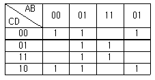
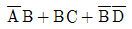
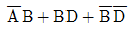
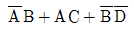
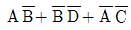
(정답률: 알수없음)

2. A와 B, C와 D를 각 각의 입력으로 하는 두 개의 개방 콜렉터형 2입력 NAND 게이트의 두 출력을 직접 연결하면 출력에 나타나는 결과는?
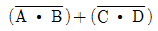
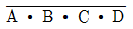
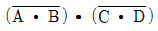
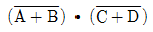
(정답률: 알수없음)
3. 전류이득은 약 1이고, 전압이득과 출력 임피던스가 높은 증폭기는?
- 에미터 접지 증폭기
- 콜렉터 접지 증폭기
- 베이스 접지 증폭기
- 모든 트렌지스터 증폭기
(정답률: 알수없음)
4. FET에 대한 3정수 관계가 옳은 것은?
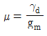
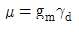
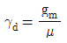
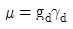
(정답률: 알수없음)
5. 그림과 같은 회로의 동작에 관한 설명으로 틀린 것은?
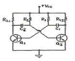
- 발진주파수는 부하저항(RL)과 관계가 없다.
- 비안정 멀티바이브레이터이다.
- C1=C2=C, R1=R2=R 일 때 출력파의 주기는 4RC가 된다.
- 콜렉터의 출력파형은 구형파를 얻을 수 있다.
(정답률: 알수없음)
6. 그림과 같은 논리회로의 출력 D는?
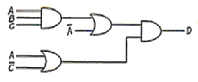
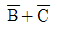
- A∙B∙C
- A∙C+B∙C
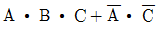
(정답률: 알수없음)
7. 단일접합 트랜지스터(UJT)를 사용하여 그림과 같은 회로를 구성하였다. E점에 나타나는 파형은?
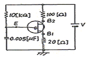
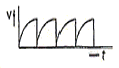
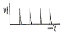
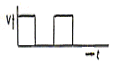
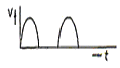
(정답률: 알수없음)
8. 그림의 연산증폭기 회로에서 R4 저항의 사용 목적은?
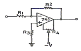
- 입력 바이어스 전류보상
- 부궤환
- 입력 오프셋 전압보상
- 위상 지연보상
(정답률: 알수없음)
9. 그림과 같은 플립 플롭(flip-flop)회로를 3개 직력접속한 후 입력에 1000[Hz]의 펄스를 가했다면 마지막 단 플립 플롭에 나타나는 신호의 주파수는 몇[Hz]인가?
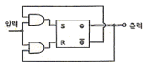
- 125
- 250
- 750
- 4000
(정답률: 알수없음)
10. 반송주파수 700[㎑]를 정현파 100[㎑]~10[㎑]의 신호파로 진폭변조 하였을 때 점유주파수 대역폭은?
- 100[㎑]
- 5[㎑]
- 10[㎑]
- 20[㎑]
(정답률: 알수없음)
11. 다음 논리식을 간단히 하면?
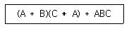
- BC
- 1
- A + BC
- A + B + C
(정답률: 알수없음)
12. 그림에서 D1, D2는 5[V] 제너(zener)다이오드이다. 부하전압 VL은 다음 어느 범위에 있겠는가? (단, VS =10sin(ωt+θ)[V]이다.)
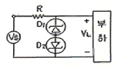
- VL ≤ 5[V]
- VL ≥ 5[V]
- -5[V] ≤ VL ≤ 5[V]
- VL ≤ -5[V] 또는 VL ≥ 5[V]
(정답률: 알수없음)
13. 쉬프트레지스터에서 오른쪽으로 비트 이동을 할때 일어나는 현상으로 맞는 것은?
- 2로 나눈 것과 같은 현상이 나타난다.
- 2를 곱한 것과 같은 현상이 나타난다.
- 4를 곱한 것과 같은 현상이 나타난다.
- 4를 나눈 것과 같은 현상이 나타난다.
(정답률: 알수없음)
14. 이득 60[㏈]의 저주파 전압증폭기가 10[%]의 왜율을 가지고 있을 때 이것을 0.1[%] 이내로 하는 방식 중 옳은 것은?
- 궤환율이 약 20[㏈]의 부궤환을 걸어준다.
- 궤환율이 약 20[㏈]의 정궤환을 걸어준다.
- 증폭도를 10[㏈] 낮게 한다.
- 전압변동율을 1/10로 낮게 한다.
(정답률: 알수없음)
15. 다음 회로는 무슨 카운터인가?
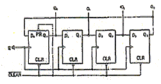
- Binary Counter
- Ring Counter
- BCD Counter
- Up / Down Counter
(정답률: 알수없음)
16. 그림의 NOR 게이트 단안정 멀티바이브레이터 회로에서 R=100[㏀], C=0.47[㎌]이면 대략 출력펄스의 폭[㎳]은?
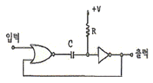
- 8.15
- 16.3
- 32.6
- 65.2
(정답률: 알수없음)
17. 자려발진기의 주파수안정도에 미치는 영향과 대책에 대해 잘못 설명된 것은?
- 발진회로의 저항의 크기는 실효 Q에 영향을 주어 주파수가 변하므로 저항을 최소화 한다.
- 발진회로에 접속된 부하의 변동은 실효임피던스가 변하므로 그 접속을 소결합한다.
- 발진기의 전원전압이 변하면 FET 및 트랜지스터의 동작점이 변하여 주파수가 불안정할 수 있다.
- 발진회로의 주의온도가 공진회로의 L,C값의 변화를 초래하므로 주파수 변동을 일으킨다.
(정답률: 알수없음)
18. 그림과 같은 교류적 등가회로로 표시되는 발진회로의 발진 주파수는?
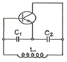
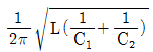
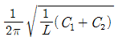
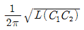
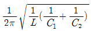
(정답률: 알수없음)
19. 궤환증폭기의 특성 중 옳게 기술한 것은?
- 전압직렬 궤환회로에서는 입력저항은 궤환회로가 없을때의 입력저항보다 크다.
- 전류직렬 궤환회로에서는 입력저항은 궤환회로가 없을 때의 입력저항보다 적다.
- 전류병렬 궤환회로에서는 입력저항은 궤환회로가 없을 때의 입력저항보다 크다.
- 전압병렬 궤환회로에서는 입력저항과 궤환회로가 없을때의 입력저항과 같다.
(정답률: 알수없음)
20. 다음 중 Access time 이 가장 빠른 기억장치는?
- Magnetic drum
- Static RAM
- Magnetic disk
- Magnetic tape
(정답률: 알수없음)
2과목: 방송통신 기기
21. 다음 중에서 라디오 방송 설비가 아닌 것은?
- 부조정실
- 비디오편집실
- 송신소
- 주조정실
(정답률: 알수없음)
22. 방송용 송신기에서 증폭기의 입력 전력이 3mW, 출력 전력이 2W일 때 전력이득은?
- 60[dBm]
- 40[dBm]
- 30[dBm]
- 10[dBm]
(정답률: 알수없음)
23. TV의 영상을 분해하고 조립하는 능력을 나타내는 파라메터(parameter)를 무엇이라고 하는가?
- 변조도
- 증폭도
- 분포도
- 해상도
(정답률: 알수없음)
24. 다음 중 위성통신의 장점이 아닌 것은?
- 산간, 도서 지역을 불문하여 난시청을 해소할 수 있다.
- 대용량으로 많은 통신 용량을 가지고 대용량 서비스가 가능하다.
- 다원접속 및 고품질의 광대역 통신이 가능하다.
- 포인트 투 포인트(Point to Point)로 통화 구성만이 가능하다.
(정답률: 알수없음)
25. 텔레비전(TV)의 음성전파와 영상전파의 관계 중 옳은 것은?
- 음성전파와 영상전파는 같다.
- 음성전파는 영상전파보다 4.5㎒ 낮다.
- 음성전파는 영상전파보다 4.5㎒ 높다.
- 음성전파는 영상전파의 1/2이다.
(정답률: 알수없음)
26. 필드의 끝부분에 존재하며 전자총의 주사가 영상의 맨 위쪽으로 귀선(retrace)되도록 하는 신호는?
- 수평블랭킹(horizontal blanking)
- 주직블랭킹(vertical blanking)
- 수직동기펄스(vertical sync pulse)
- 수평동기펄스(horizontal sync pulse)
(정답률: 알수없음)
27. 스위프 신호 발생기(sweep signal source)에 대한 설명으로 가장 적당한 것은?
- 점유 주파수 대역폭의 협대역을 주파수 채배에 의한 동작의 안정화와 허용오차를 측정한다.
- 출력 신호와 주파수가 일정한 범위에서 반복하여 변화하는 신호 발생기이다.
- 2차 상호변조와 2차 상호변조를 측정하여 왜곡을 분석한다.
- 신호 레벨메터를 내장하고 있어 모든 주파수 특성을 측정한다.
(정답률: 알수없음)
28. 다음 중 위성방송 수신기의 기본구성이 아닌 것은?
- 수신안테나
- BS컨버터
- BS튜너
- 변조기
(정답률: 알수없음)
29. 측정기 입력단에 적절한 크기의 신호로 축소시켜 입력시키기 위해 사용하는 것은?
- Attenuator
- Amplifier
- Level Detector
- Mixer
(정답률: 알수없음)
30. 다음 중 FM송신기의 부가회로에 속하지 않는 것은?
- 순시 편이 제어회로(IDC)
- 프리엠파시스 회로
- 전치 보상기 회로
- 스켈치 회로
(정답률: 알수없음)
31. 방송 운행표에 따라 방송국 내, 외로부터의 방송 프로그램을 최종적으로 조정하여 송신소나 네트웍 국으로 분배하는 기능을 수행하는 곳은?
- 부조정실
- 주조정실
- 위성중계실
- 회선운영실
(정답률: 알수없음)
32. NTSC 컬러 TV방식의 색 부반송파 주파수는?
- 3.58㎒
- 3.28㎒
- 3.78㎒
- 6.25㎒
(정답률: 알수없음)
33. 다음 중 방송국의 안테나를 설계할 때 고려해야 할 사항과 거리가 먼 것은?
- 편파(Polarization)
- 복사각
- 최고사용가능주파수(MUF)
- 주파수대역폭
(정답률: 알수없음)
34. CATV 방송국에서 방송신호를 직접 측정 또는 시험하기 위하여 갖추어야 할 장비에 속하지 않는 것은?
- 파형 분석기
- 벡터스코프
- TV 신호 발생기
- 비트에러 측정기
(정답률: 알수없음)
35. 위성의 주파수는 이웃하고 있는 나라와 동일 주파수를 사용하고 있을 때, 전파의 효율적인 사용을 위하여 동일 주파수에서 혼신 없이 사용하는 방법으로 가장 타당한 것은?
- 주파수 다이버시티를 사용한다.
- 전파의 편파를 달리하여 사용한다.
- 주파수 파장분할 다중방식을 사용한다.
- 주파수 시분할 다중방식을 사용한다.
(정답률: 알수없음)
36. 다음 중 아날로그 신호에서 디지털 신호로 변환시 중요3단계 과정이 아닌 것은?
- 표본화(sampling)
- 복호화(decoding)
- 양자화(quantising)
- 부호화(coding)
(정답률: 알수없음)
37. 디지털 위성방송의 장점이라고 볼 수 없는 것은?
- 높은 C/N으로 시청이 가능하다.
- 디지털변조가 가능하다.
- 고스트현상이 없어진다.
- 부가방송서비스를 제공할 수 있다.
(정답률: 알수없음)
38. 방송측정 장비중 스펙트럼 분석기로 측정할 수 없는 것은?
- 신호의 주파수, 레벨
- 주파수 대역폭 측정
- 잡음 전력 및 C/N비 측정
- 신호의 위상각
(정답률: 알수없음)
39. 컬러TV 프로그램 제작과정에서 컬러화질의 감시, 색 맞추기(색조 조정), 화이트 밸런스 조정, 레지스트레이션 감시, 조명, 세트, 의상, 분장을 종합한 색채 설계 및 효과확인에 사용되는 장비는?
- 파형 모니터
- Vector scope
- 컬러 마스터 모니터
- 조도계
(정답률: 알수없음)
40. 다음중 위성 뉴스 취재 장치인 SNG는 무엇인가?
- Satellite News Gathering
- Satellite Node Guardline
- Satellite Numbers Gathering
- Satellite Numbers Guardsector
(정답률: 알수없음)
3과목: 방송미디어 공학
41. 다음중 방송미디어에 해당되는 것은?
- VAN
- CD
- CATV
- ATM
(정답률: 알수없음)
42. 인간이 들을 수 있는 가청주파수의 범위 중 맞는 것은?
- 20㎐~2㎑
- 20㎐~20㎑
- 2㎐~2㎑
- 2㎐~20㎑
(정답률: 알수없음)
43. 무선통신의 전송에서 수신 신호의 감쇠 요인이 아닌 것은?
- 자유공간손실
- 백색잡음
- 반사손실 (Reflection loss)
- 회절손실 (Diffraction loss)
(정답률: 알수없음)
44. 다양한 정보를 손쉽게 제공해 주는 일종의 안내시스템으로 멀티미디어 도우미라고, 할 수 있으며, 여행자에게 해당지역의 지리를 안내하거나 철도, 버스노선 및 배차시간 등을 사용자가 원하는 형태로 제공하는데 적합한 것은?
- 키오스크
- 화상전화
- VOD
- ARS
(정답률: 알수없음)
45. TV 방송전파를 이용하여 TV 방송과 함께 문자 또는 도형 형태의 정보제공이 가능한 뉴미디어는?
- 텔레텍스(Teletex)
- 텔레텍스트(Teletext)
- 정지화방송
- 비디오텍스(Videotex)
(정답률: 알수없음)
46. 국내의 아날로그 텔레비전 방송에서 오디오 신호의 변조방식은?
- AM
- FM
- PM
- PCM
(정답률: 알수없음)
47. 우리나라 아날로그 TV의 NTSC 방식에서 사용하는 주사선수는?
- 525
- 565
- 625
- 665
(정답률: 알수없음)
48. 다음 중 멀티미디어에 대한 설명으로 거리가 먼 것은?
- 멀티미디어는 양방향 대화 형태이다.
- 멀티미디어 정보 데이터는 디지털 형태로 생성, 저장, 처리 및 표현된다.
- 멀티미디어는 다수의 미디어 정보를 동시에 포함한다.
- 멀티미디어 정보는 TV만을 이용하여 획득, 저장, 처리 및 표현된다.
(정답률: 알수없음)
49. MPEG-2 영상부호화에 기본적으로 사용된는 DCT 변환에서 수행되는 블록단위는?
- 4*4
- 8*8
- 16*16
- 32*32
(정답률: 알수없음)
50. 다음 중 ATSC 방식의 영상신호 압축방식은?
- MPEG-1
- MPEG-2
- MPEG-3
- MPEG-4
(정답률: 알수없음)
51. 다음 방송용어 설명 중 잘못된 것은?
- DVE란 시간과 영상 등의 내용을 정확히 맞추어 최종적인 방송용으로 편집된 Tape 이다.
- 방송용 VTR의 기록 방식으로는 Betacam SP, 디지털 Betacam 등이 사용된다.
- NLE란 아날로그 비디오 신호를 디지털화하여 하드디스크 등에 기록하였다가 편집하는 작업이다.
- CG(Computer Graphic)란 컴퓨터를 이용하여 문자를 만들거나 움직이게 하여 TV의 자막처리로 많이 사용된다.
(정답률: 알수없음)
52. 다음 중 색차신호인 I와 Q신호의 위상차는?
- 45도
- 90도
- 135도
- 180도
(정답률: 알수없음)
53. 다음 중 Doppler 효과를 올바르게 설명한 것은?
- 주파수가 조금 다른 두소리가 겹쳐졌을 때, 두소리가 서로 간섭하여 또 다른 주파수를 발생하며 주기적으로 강약을 되풀이하는 현상
- 파동원과 관측자가 상대적으로 운동할 때 진동수가 정지해 있을 때와 다르게 관측되는 현상
- 음파의 압력으로 어떤 물체가 그 음파와 동일한 진동수의 소리를 내는 현상
- 어떤 물체에 음파가 부딪쳤다가 되돌아 오거나 진행방향이 변하는 현상
(정답률: 알수없음)
54. 조명 기구의 광원이 4,950[lm]일때 33.[m2]의 면적에 비추어 지면 조도 E[lm/m2]는 얼마나 되는가?
- 5,280
- 4,620
- 33
- 15
(정답률: 알수없음)
55. 국내 아날로그 텔레비전 방송에서 영상신호의 반송주파수가 175.25㎒이면 음성신호의 반송주파수는 얼마인가?
- 169.25㎒
- 170.75㎒
- 179.75㎒
- 181.25㎒
(정답률: 알수없음)
56. 다음 중 MPEG-1 영상부호화 기법에서 화면내 부호만을 사용하여 부호화하는 화면은?
- I 화면
- B 화면
- P 화면
- D 화면
(정답률: 알수없음)
57. TV화면을 2번에 나누어 주사하여 2개의 필드가 하나의 프레임을 만들게 하는 주사방식은?
- 순차주사
- 비월주사
- 유효주사
- 수평주사
(정답률: 알수없음)
58. 잡지, 신문, 라디오, 영화, TV 등 대중에게 정보를 전달하는 매체를 무엇이라고 하는가?
- 뉴 미디어
- 매스 미디어
- 표현 미디어
- 지각 미디어
(정답률: 알수없음)
59. 다음 중 FM 방송의 특징으로 틀린 것은?
- VHF대역을 사용함으로 송수신 주파수 대역을 최대 가청주파수 영역 범위까지 사용하므로 전송대역이 넓다.
- 진폭 비직선에 원인이 되는 고조파 일그러짐이 발생하지 않으므로 고충실도의 음성전송이 가능하다.
- S/N비가 진폭변조보다 월등히 크다.
- 진폭변조보다 원거리 방사에 용이하다.
(정답률: 알수없음)
60. AM 수신기의 특징 중 어느 정도의 미약한 전파까지 수신할 수 있는지의 능력을 나타내는 것은?
- 안정도
- 충실도
- 선택도
- 감도
(정답률: 알수없음)
4과목: 방송통신 시스템
61. 중계차량를 이용하여 제작 현장에서 방송컨텐츠를 송신소를 통해 연주소에 보내고자 한다. 다음 중 중계차량과 송신소간 컨덴츠를 실시간 전송을 할 때 가장 용이하게 구성할 수 있는 주 링크(Link) 시스템은?
- ISDN
- MICRO WAVE
- T1급-CABLE
- FIBER CABLE
(정답률: 알수없음)
62. 디지털 지상파 텔레비전 방송의 규격이 아닌 것은?
- ISDB-T
- DVB-T
- ATSC
- ISDN
(정답률: 알수없음)
63. 국내방송중인 위성방송(Skylife)의 오디오 압축규격에 해당하는 것은?
- BSAC
- AAC
- MPEG-4
- MPEG-2
(정답률: 알수없음)
64. 다음 중 전파의 잡음 방해에 대한 개선 방법이 아닌 것은?
- 수신전력을 크게
- 내부잡음을 적게
- 대역폭을 넓게
- 필터 삽입
(정답률: 알수없음)
65. 제한된 용량을 가진 통신자원에 대하여 다수의 독립적인 사용자가 공동의 자원으로 채널을 공유하기 위하여, 방송통신시스템에서 사용되는 다중화의 종류가 아닌 것은?
- 비동기 위상 다중화
- 동기 시분할 다중화
- 비동기 시분할 다중화
- 주파수 분할 다중화
(정답률: 알수없음)
66. 다음 디지털 방송 송신기 시스템에 사용되는 것이 아닌 것은?
- 변조기
- 전력증폭기
- 인터리버
- 채널 등화기
(정답률: 알수없음)
67. 다음 중 CATV 시스템의 장해발생의 주 원인이 아닌 것은?
- 태풍, 지진, 낙뢰등에 의한 장해
- 지지주의 이설 또는 교환등에 의한 장해
- 주택의 신축, 증출 및 개축이나 수목의 성장에 따른 장해
- 주파수가 높아짐에 따른 누화로 인한 장해
(정답률: 알수없음)
68. 방송국의 공중선 전력이 2㎾에서 20㎾로 증가하면 거리가 일정할 때 전계 강도는 몇 배로 되는가?
- 5배
- 25배
- 1/5배
- 1/25배
(정답률: 알수없음)
69. CATV에 대한 설명으로 관계가 먼 것은?
- 설비나 유지운영에 비용이 발생된다.
- 고층 건물 등에 의한 수신장애가 발생한다.
- 1개의 케이블로 많은 양의 프로그램을 송신할 수 있다.
- 기존 방송을 재송신하거나 스포츠, 영화, 게임 등과 같은 전문채널을 제공하기도 한다.
(정답률: 알수없음)
70. QPSK 변조방식의 특징이 아닌 것은?
- 변조된 반송파의 포락선은 일정하다.
- 위성통신에 이용되고 있다.
- 변조된 반송파의 위상 변화는 4위상이다.
- FSK보다 주파수 사용효율이 높다.
(정답률: 알수없음)
71. 다음 중 위성방송에 이용하는 Ku대역의 주파수는?
- 상향: 1.6㎓, 하향: 1.5㎓
- 상향: 6㎓, 하향: 4㎓
- 상향: 8㎓, 하향: 7㎓
- 상향: 14㎓, 하향: 12㎓
(정답률: 알수없음)
72. 국내에서 방송중인 무궁화 위성 3호의 방송용 중계기 대역폭을 바르게 나타낸 것은?
- 24㎒
- 27㎒
- 32㎒
- 36㎒
(정답률: 알수없음)
73. 표준 음향레벨을 설정함과 동시에 프로그램의 진행에 따라 변화하는 음량을 체크하는데 사용하는 것은?
- VU 메타
- 모니터 장치
- Pitch changer
- AUTO-PAN
(정답률: 알수없음)
74. 영상의 R, G, B 신호(휘도)와 C신호(색상)로 만드는 회로는?
- 밴드패스 증폭기
- 버어스트 증폭기
- 색동기 블록
- 매트릭스 증폭기
(정답률: 알수없음)
75. 다음 중 위성 중계기의 구성 장비에 대한 설명이 잘못된 것은?
- 수신 OMT : 수신신호의 편파 분리
- HPA : 송신전력 증폭
- 다운 컨버터 : 송신 전파의 편파 분리
- LNA : 수신된 신호의 저잡음 증폭
(정답률: 알수없음)
76. 유선방송 시스템은 송출계, 전송계, 가입다계로 크게 분류된다. 다음 중 전송계에 속하는 것은?
- TV 변조부
- FM 복조부
- 연장 증폭기
- TV 수상기
(정답률: 알수없음)
77. 다음 중 유선방송의 헤드엔드 송출 시스템에서 사용하는 장치로 거리가 먼 것은?
- 신호처리기(signal processor)
- 복조기(demodulator)
- AM/FM 변조기
- 정합기
(정답률: 알수없음)
78. 주파수분할 다중화에서 부채널간의 상호간섭을 방지하기 위한 것은?
- 가드밴드
- 채널
- 가드타임
- 버퍼
(정답률: 알수없음)
79. TV수상기에서 색동기를 주기 위해 사용하는 주파수는?
- 15750㎐
- 60㎐
- 3.58㎒
- 4.5㎒
(정답률: 알수없음)
80. 방송설비공사는 다음 어느 법에 의해 시행하여야 하는가?
- 전파법
- 전기통신사업법
- 정보통신공사업법
- 방송법
(정답률: 알수없음)
5과목: 전자계산기 일반 및 방송설비기준
81. CPU와 주변 장치의 인터페이스에서 읽기, 쓰기, 인터럽트 요청 등에 사용하는 버스는?
- 입출력 버스
- 주소 버스
- 데이터 버스
- 제어 버스
(정답률: 알수없음)
82. 수치 연산 결과가 ( 11000011 )2로 나타나는 2진수의 연산식은?
- 1100 + 0011
- 1111 * 1001
- 1111 * 1101
- 1111 / 1011
(정답률: 알수없음)
83. 기억장치의 계층에서 가장 속도가 빠른 것은?
- 자기기억장치
- 보조기억장치
- 캐시기억장치
- 코어기억장치
(정답률: 알수없음)
84. DMA(Direct Memory Access)에 관한 설명 중 틀린 것은?
- 주변장치와 기억 장치등의 대용량 데이터 전송에 적합하다.
- 프로그램방식보다 시스템의 효율이 좋다.
- 프로그램방식보다 데이터의 전송속도가 느리다.
- CPU를 경유하지 않고 메모리와 입출력 주변 장치 사이에 직접 데이터 전송을 한다.
(정답률: 알수없음)
85. 데이터를 표현할 때 가장 적은 비트의 수를 필요로 하는 것은?
- real type
- integer type
- character type
- boolean type
(정답률: 알수없음)
86. 일괄 처리 시스템에서 사용자의 자료를 시스템에 보낸 시점부터 시스템에서 데이터가 처리되어 그 결과가 사용자에게 전달 될 때까지의 시간을 무엇이라 하는가?
- Time Slice
- Processing Time
- Turnaround Time
- Throughput Time
(정답률: 알수없음)
87. 다음 명령어와 관계 있는 것은?
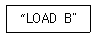
- 0-주소 명령어
- 1-주소 명령어
- 2-주소 명령어
- 3-주소 명령어
(정답률: 알수없음)
88. 다음 중 어드레싱(addressing)방법이 아닌 것은?
- 직접 어드레싱(direct addressing)
- 즉시 어드레싱(immediate addressing)
- 간접 어드레싱(indirect addressing)
- 임시 어드레싱(temporary addressing)
(정답률: 알수없음)
89. 전자계산기에서 보수(Complement Number)를 이유는?
- 음의 소수를 나타내기 위하여
- 소수의 표현이 가능하도록 하기 위하여
- 복소수의 허수부분을 표현하기 위하여
- 가산기에 의해 뺄셈을 할 수 있도록 하기 위하여
(정답률: 알수없음)
90. 다음은 중앙처리장치 내의 하드웨어요소와 그 기능을 짝지은 것이다. 서로 맞지 않는 것은?
- Register - 기억기능
- Accumulator - 제어기능
- ALU -연산기능
- lnternal bus - 전달기능
(정답률: 알수없음)
91. 방송설비공사는 다음 어느 법에 의해 시행하여야하는가?
- 전파법
- 전기통신사업법
- 정보통신고사업법
- 방송법
(정답률: 알수없음)
92. 공중선전력 중에서 반송파전력을 바르게 설명한 것은?
- 정상동작상태에서 송신장치로부터 송신공중선계의 급전선에 공급되는 전력으로서 변조에 사용되는 최저 주파수의 1주기와 비교하여 충분한 시간에 걸쳐 평균한 것은 말한다.
- 정상동작상태에서 송신장치로부터 송신공중선계의 급전선에 공급되는 전력으로서 변조포락선의 첨두에서 무선주파수 1주기 동안에 걸쳐 평균한 것을 말한다.
- 무변조 상태에서 송신장치로부터 송신공중선계의 급전선에 공급되는 전력으로서 무선주파수의 1주기 동안에 걸쳐 평균한 것을 말한다.
- 송신장치의 종단증폭기의 정격출력을 말한다.
(정답률: 알수없음)
93. 방송사업자, 중계유선방송사업자의 허가 만료후 재허가시 심사사항이 아닌 것은?
- 방송위원회의 방송평가
- 방송발전을 위한 지원계획의 이행 여부
- 시청자위원회의 방송프로그램 평가
- 방송 송출 및 수신장비의 사용 평가
(정답률: 알수없음)
94. 다음 중 정보통신사업자 이외의 자가 시공할 수 있는 경미한 공사의 범위에 해당 되지 않는 것은?
- 정보통신용 전송오 설비공사
- 연면적 1000m2 이하의 건축물의 자가유선방송설비, 구내방송설비공사
- 간이무선국, 아마추어국 실험국의 무선설비공사
- 인입되는 국선이 5회선 이하인 건축물의 구내통신선로 설비공사
(정답률: 알수없음)
95. 다음 중 ( )에 해당되는 것은?
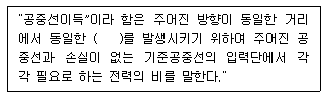
- 자계 또는 자력밀도
- 전파 또는 전파밀도
- 전계 또는 전력밀도
- 전계 또는 자력밀도
(정답률: 알수없음)
96. 다음 중 방송사업자에 해당하지 않는 것은?
- 지상파방송사업자
- 종합유선방송사업자
- 음악유선방송사업자
- 위성방송사업자
(정답률: 알수없음)
97. 다음 중 방송위원회의 심의규정이 아닌 것은?
- 공중도덕과 사회윤리에 관한 사항
- 건전한 가정생활 보호에 관한 사항
- 남여노소 평등에 관한 사항
- 민족문화의 창달과 민족의 주체성 함양에 관한 사항
(정답률: 알수없음)
98. 전송설비 및 선로설비에 있어서 전력유도방지조치를 위한 기준에 맞지 않는 것은?
- 상시 유도위험종전압 : 60 [V]
- 기기 오동작 유도종전압 : [V]
- 잡음전압 : 5 [mV]
- 이상시 유도위험전압 : 650 [V]
(정답률: 알수없음)
99. 혼신의 방지를 위한 방송국의 개설조건 등에서 해당되지 않는 사항은?
- 방송국의 설치장소
- 송신공중선의 높이
- 송신공중선 출력 및 지향특성
- 수신지역의 범위
(정답률: 알수없음)
100. 다음 무선설비규칙 중 수신설비의 충족 조건이 알맞은 것은?
- 전계강도가 적당할 것
- 수신설비의 내부잡음이 적당할 것
- 선택도가 클 것
- 명료도가 적절할 것
(정답률: 알수없음)
A'B' + AB' + A'B
B'C' + BC' + B'C
AC' + A'C
AB
이를 간략화하면 다음과 같다.
B + AC
따라서 정답은 "" 이다.